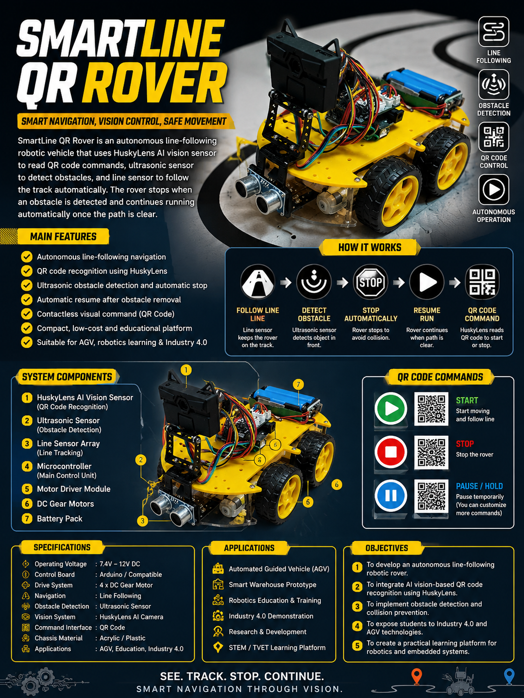
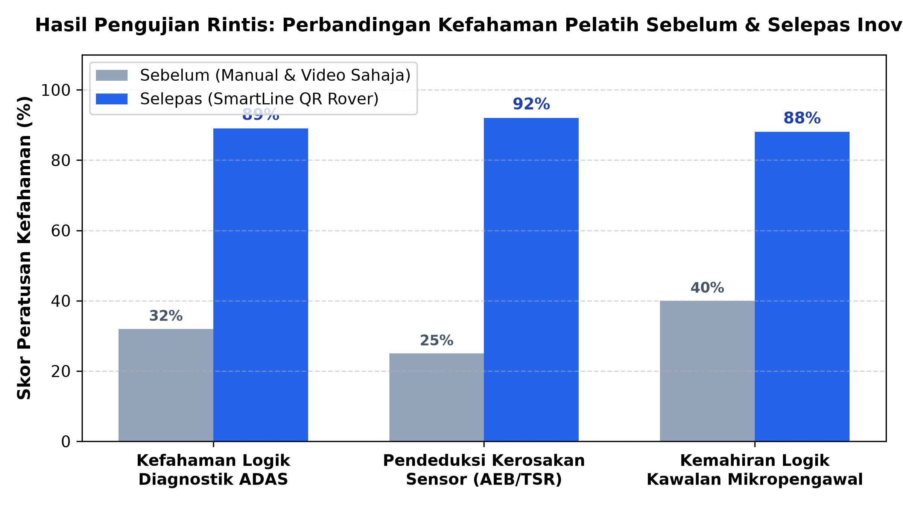
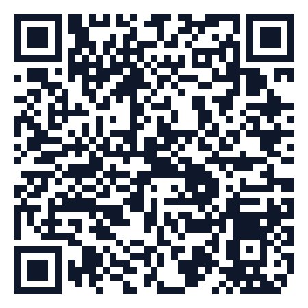

MODUL PdP INTERAKTIF: SIMULATOR DIAGNOSTIK ADAS AUTOMOTIF MENGGUNAKAN SMARTLINE QR ROVER
1 LATAR BELAKANG / PENYATAAN MASALAH
Projek ini dibangunkan bagi mengatasi masalah kos tinggi penyediaan kenderaan sebenar ber-ADAS serta keselamatan pengendalian sistem bervoltan tinggi yang dihadapi oleh pelatih TVET Automotif. Kaedah sedia ada didapati bergantung sepenuhnya kepada manual teknikal dan video tanpa latihan amali langsung, sekali gus menjejaskan kefahaman praktikal logik kawalan dan pengaturcaraan sensor ADAS.
2 OBJEKTIF INOVASI
Projek ini bertujuan untuk:
- i. Membangunkan platform simulator robotik berautonomi SmartLine QR Rover menggunakan AI Vision (HuskyLens) dan sensor ultrasonik bagi mensimulasikan ADAS.
- ii. Menyediakan modul PdP digital interaktif yang dipetakan secara langsung kepada standard NOSS G452-011-4:2025 (ADAS Diagnosis).
- iii. Menyediakan pendedahan amali berskala mikro dan kos rendah sebelum pelatih mengendalikan kenderaan sebenar.
3 PENERANGAN INOVASI & PROTOTAIP
SmartLine QR Rover ialah platform robotik pembelajaran interaktif yang dibangunkan khusus untuk mensimulasikan logik kamera pengesanan visual dan sensor perlanggaran kenderaan autonomi ADAS dalam persekitaran mikro yang selamat dan mudah dikawal.

4 METODOLOGI / PROSES PEMBANGUNAN
- Fasa 1: Mengenal Pasti Masalah: Menilai jurang latihan amali ADAS akibat kos kenderaan tinggi dan risiko keselamatan.
- Fasa 2: Reka Bentuk: Merangka casis akrilik pacuan 4-roda dan menyepadukan sensor AI Vision, ultrasonik, serta IR garisan.
- Fasa 3: Pembangunan: Mengatur cara mikropengawal Arduino (ECU) dan membangunkan modul PdP digital Google Site selari NOSS G452-011-4:2025.
- Fasa 4: Pengujian: Ujian rintis kerosakan sensor terpandu dan tindak balas arahan kod QR bersama pelatih.
- Fasa 5: Penambahbaikan: Memurnikan soalan refleksi dan mengintegrasikan perancangan sistem pelaporan Diagnostic Trouble Code (DTC).
5 NILAI DAN KELEBIHAN INOVASI
| Komponen | Penerangan |
|---|---|
| Kebaharuan (Novelty) | Menterjemahkan konsep diagnosis ADAS (skala penuh) kepada persekitaran mikro yang selamat menggunakan AI Vision plug-and-play. |
| Kebergunaan (Usefulness) | Membantu pelatih menguasai logik diagnostik C05-W02 & C05-W03 secara hands-on tanpa risiko keselamatan bervoltan tinggi. |
| Kebolehlaksanaan (Replicability) | Litar pendawaian, kod sumber, dan spesifikasi komponen dipaparkan di Google Site untuk dibina semula oleh institusi TVET lain. |
| Keberkesanan Kos (Cost Effectiveness) | Kos pembinaan kit jauh lebih rendah berbanding pemerolehan sistem ADAS atau kenderaan baharu untuk latihan awal. |
| Kelestarian (Sustainability) | Penggunaan bateri boleh cas semula serta komponen modular yang mudah diselenggara dan disokong platform digital. |
| Kebolehskalaan (Scalability) | Berpotensi diperluaskan kepada simulasi Radar & LiDAR (C05-W01, C05-W04) serta pengkomersialan kit STEM/TVET. |
6 PENGGUNAAN AI DAN ETIKA AI
Alat AI: Claude (Anthropic), ChatGPT, dan Google Flow (Veo 3.1).
Peranan & Pengesahan: AI digunakan untuk pemetaan kurikulum NOSS, penyusunan skrip PdP, dan penjanaan segmen visual konsep. Semua kandungan teknikal, logik pengaturcaraan, dan pengujian fizikal prototaip disemak serta disahkan secara manual oleh penulis.
7 HASIL PENGUJIAN / VALIDASI / BUKTI
Hasil pengujian rintis menunjukkan peningkatan kefahaman logik sistem ADAS yang ketara. Pelatih yang pada mulanya sukar membayangkan logik tindak balas AEB menerusi manual teknikal berjaya membuat deduksi logik diagnostik kerosakan pada mikropengawal secara automatik semasa simulasi kegagalan sensor.

8 IMPAK INOVASI
| Bidang Impak | Penerangan |
|---|---|
| Impak Akademik / Pembelajaran | Merapatkan jurang teori dan praktikal logik kawalan ADAS sebelum latihan kenderaan sebenar. |
| Impak Operasi / Institusi | Membantu pensyarah mencapai standard NOSS G452-011-4:2025 Level 4 secara kos efektif. |
| Impak Komuniti / Industri / Pasaran | Menjadi kit latihan asas berpotensi tinggi untuk institusi kemahiran (Politeknik, ILP, ADTEC) dan sekolah vokasional. |
| Potensi Pengkomersialan | Berpotensi dikomersialkan sebagai Kit Pendidikan STEM/TVET interaktif bersama pakej perkakasan dan perisian. |
| Impak Dasar / Ekosistem TVET | Menyokong agenda Industri 4.0 dan transformasi TVET negara dengan pendedahan teknologi sensor AI kenderaan berautonomi. |
9 KESIMPULAN
SmartLine QR Rover berjaya membantu menyelesaikan masalah kekangan kos dan risiko keselamatan latihan diagnostik ADAS. Inovasi ini memberi manfaat tinggi dari aspek kefahaman logik kawalan dan berpotensi diperluaskan secara menyeluruh dalam ekosistem TVET Automotif.
10 RUJUKAN DAN BAHAN SOKONGAN
Jabatan Pembangunan Kemahiran. (2025). National Occupational Skills Standard (NOSS) G452-011-4:2025 Automotive Electrical Diagnostic Level 4. Kementerian Sumber Manusia Malaysia.
